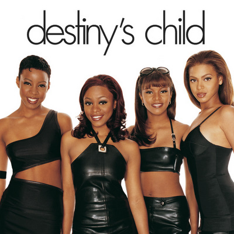

The Experience of "Queen Bey" Beyonce
Beyonce Giselle Knowles is a singer-songwriter with six solo albums and 20 Grammys under her belt. Born and raised in Houston, Texas, Beyonce performed in various singing and dancing competitions as a child. She rose to fame in the late 1990s as lead singer of the R&B girl-group Destiny's Child
